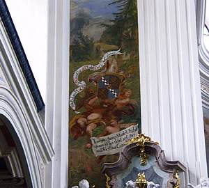
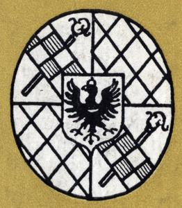

A na tej stronie będę chciał zaprezentować wyniki moich poszukiwań herbu Krzeszowa (choć raczej dotyczą one oczywiście herbu krzeszowskiego opactwa cystersów).
| Ten herb stał się inspiracją do poszukiwań. Jest to skan pochodzący ze starej poniemieckiej książki. Niestety, nie wiem co to za książka, jaki jest jej autor, tytuł ani rok wydania. Ale herb ewidentnie jest herbem krzeszowskiego zakonu. { skan pochodzi niemal na pewno z książki: Ambrosius Rose Kloster Grussau - dodano 26-08-2008 } |
|
| W książce "Krzeszów uświęcony łaską" (patrz lit. 7) znajduje się reprodukcja miedziorytu H. Tscherninga wg rysunku M. L. Willmanna z 1878 roku "Widok opactwa krzeszowskiego" ze zbiorów P. Benedyktynek w Krzeszowie. Widoczny na niej jest opat Bernard Rosa na tle herbu zakonu. | |
 |
Po powiększeniu herb widać w miarę wyraźnie. |
| W tomie 8 "Słownika geografii turystycznej Sudetów" (patrz lit. 10) znajdziemy taki sam herb jak pierwszy z prezentowanych wcześniej.. | |
 |
W książce Henryka Dziurli "Krzeszów" (lit. 9) znajdziemy reprodukcję obrazu nieznanego autora z połowy XVIII w. ze zbiorów Gimnazjum w Kłodzku. Herb co prawda jest widoczny, ale niestety jakość druku nie pozwala dojrzeć szczegółów. |
 |
Natomiast w książce "Krzeszów europejska perła baroku" (lit. 3) znajdziemy reprodukcję obrazu z krzeszowskiego klasztoru przedstawiającą herb opata Placyda. |
| Oczywiście skan z książki można sobie powiększyć, widać jednak charakterystyczne "kropki" rastra drukarskiego. Ale herb jest jak najbardziej widoczny. | |
 |
Od pewnego czasu przy wejściu głównym na plac kościelny przed krzeszowską bazyliką wisi po lewej stronie na słupie bramy muru kościelnego reprodukcja herbu Krzeszowa. To zdjęcie zostało zrobione 19 czerwca 2003 roku. Aktualnie (sierpień 2004) herbu tego już nie ma. |
| Taki herb Krzeszowa znalazłem na stronie http://www.jarema.art.pl/Krzeszow.htm. Tyle tylko, że jest to herb Krzeszowa nad Sanem :-) | |
| Jak czytam w pracy Witolda Papierniaka, w kościele św. Józefa elementem ambony jest herb krzeszowskiego opactwa. Sięgam do literatury i faktycznie, na powiększonym fragmencie zdjęcia z książki Doroty Kudery "Krzeszów" (lit. 1) widać, że herb jest. Ale trzeba by na miejscu zdjęcie zrobić, bo z tego niestety nic nie widać .... | |
 |
Ostatnio (20 sierpnia 2004) będąc w Krzeszowie usiłowałem zrobić zdjęcie herbowi z ambony w kościele św. Józefa. Niestety, bez lampy błyskowej za ciemno ... a włączenie lampy powoduje bardzo silne odbicie się światła w złoceniu. Dlatego też zdjęcia nie było łatwo zrobić. Ciekawostką są blachowkręty krzyżakowe którymi herb przykręcono do ambony, zapewne po renowacji :-) |
|  | Również w kościele św. Józefa, na wysokości kilku (kilkunastu ?) metrów, po lewej stronie od ołtarza głównego, znajdziemy herb opactwa. Ale też nie jest łatwo zdjęcie zrobić ... |
| Tutaj zbliżenie z wcześniejszego zdjęcia, skan pochodzi z okładki [lit. 3]. | |
 |
W południowym ramieniu transeptu Bazyliki, w przejściu prowadzącym do wyjścia na plac kościelny, można zobaczyć taką tablicę (epitafium opata Innocentego Fritscha). Jeśli się jej przyjrzeć, to na samym dole ... |
| ... to na samym dole widać herb krzeszowskiego opactwa :-) Sam to zauważyłem, nigdzie nie wyczytałem :-) | |
|  | A tutaj mamy skan fragmentu okładki literatury 30. Książka ta została wydana w 1964 roku a okładkę projektował Ryszard Natusiewicz i najprawdopodobniej to on jest autorem grafiki. |
 |
Skan pochodzi z okładki przewodnika po opactwie krzeszowskim: Abtei Grüssau. Ein Führer von P. Nikolaus von Lutterotti O.S.B., 3.Auflage, Verlag: Buch-und Kunsthandlung Grüssau 1941 |
| Skan pochodzi z aukcji Allegro "OSTATNI Z MOJEJ KOLEKCI DOKUMENT ZAKONU CYSTERSÓW (numer 34506589)". Oryginalny opis: "PIĘKNY UNIKATOWY DOKUMENT ZAKONU CYSTERSÓW W KRZESZOWIE (1778) NA PAPIERZE CZERPANYM Z LICZNYMI ZNAKAMI WODNYMI (ORZEŁ DATA 1775 I NAPIS SCHWEDNITZ) Z PODPISEM KLASZTORU OPATA PLACIDUSA .PIĘKNIE ZACHOWANA PIECZĘĆ LAKOWA ,CO WIDAĆ NA FOTCE !!!POLECAM!!!" | |
| Skan pochodzi z lit. 32 i przedstawia szkic herbu jaki był umieszczony na krzeszowskim dzwonie "Emmanuel". | |
 |
Zdjęcie fragmentu ramy obrazu z ołtarza głównego w bazylice. Tutaj też możemy zobaczyć herb krzeszowskiego zakonu. Srebrna rama powstała w roku 1735. Zdjęcia wykonałem 29 lipca 2007 roku (a moja "sesja fotograficzna" zakończyła się po słowach obecnego w kościele cystersa "A kto panu pozwolił tu robić zdjęcia ... ?". A ja grzecznie sobie wówczas poszedłem :-) |
dodano 28 lutego 2008 roku:
dodano 14 września 2014 roku:
| Jeszcze raz herb z kościoła św. Józefa. Jak napisałem wyżej nie jest mu łatwo zjęcie zrobić, ale miałem ku temu okazję w czasie wycieczki Śladami budowniczych i skarbów krzeszowskich. Przechodząc wysoko łatwiej zrobić czytelne zdjęcie :-) | |
 |
Niestety wykonane zdjęcie herbu na ambonie w kościele św. Józefa wyszło z pośpiechu trochę "słabo". Trzeba będzie je kiedyś powtórzyć ... |
dodano 1 maja 2016 roku:
| Jeszcze raz herb Krzeszowa nad Sanem, tym razem znaleziony dzisiaj na Wikipedii. A dlaczego znowu wracam do tego herbu? | |
| Wracam, bo właśnie zauważyem go na filmie o Krzeszowie. Wpisaliśmy z synem w wyszukiwarce na stronie YouTube zapytanie "Krzeszów" i na 8480 znalezionych wyników akurat pierwszy film Krzeszów Bazylika Wniebowzięcia NMP 2015 został zilustrowany tym właśnie herbem. Autorowi filmu gratuluję pierwszego miejsca na liście wyników, ale herb jednak trochę nie taki jak trzeba :-) |

{kind=link}
{kind=link}
{kind=link}
{kind=link}
{kind=link}
{kind=link}
{kind=link}
{kind=link}
{kind=link}
{kind=link}
{kind=link}
{kind=link}
{kind=link}
{kind=link}
{kind=link}